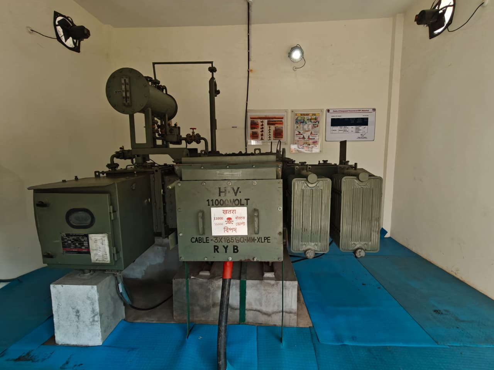

TRANSFORMER UNIT

Station Power Transformer
A transformer is an electrical device used to step down high voltage incoming power to a lower voltage suitable for station equipment, motors, compressors and auxiliary systems.
It operates on the principle of electromagnetic induction and ensures reliable power supply to all operational units of the station.
Type : Oil Filled Power Transformer
Function : Step Down Electrical Voltage
Cooling : Oil Natural Air Natural (ONAN)
Application : Station Electrical Supply